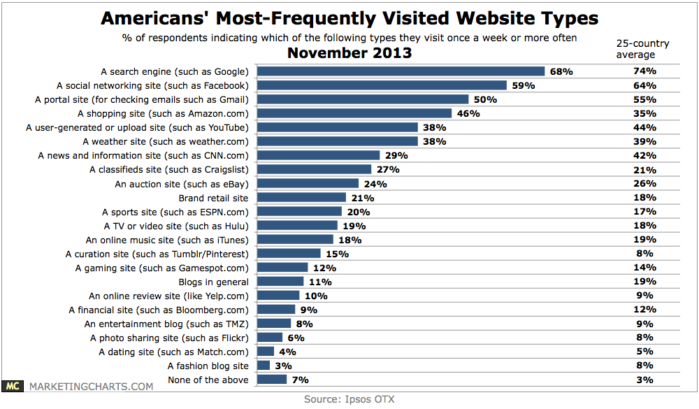

Introduction and general concepts

Internet and the Web
A network of networks
-
Here is a quote from Wikipedia :
The Internet is a global system of interconnected computer networks that use the standard Internet Protocol Suite (TCP/IP) to serve billions of users worldwide. It is a network of networks that consists of millions of private and public, academic, business, and government networks of local to global scope that are linked by a broad array of electronic and optical networking technologies. The Internet carries a vast array of information resources and services, most notably the inter-linked hypertext documents of the World Wide Web (WWW) and the infrastructure to support electronic mail.
You realy have to see Internet like an interconnection of computers and not like a cloud, despite of companies like Apple or Google make us to believe.
Information online
The first thing that you have to know in this lesson : Internet and the web are not the same thing ! The web is a service based on the interconnection of network. It's just an application like the mail. The name of the service is "HTTP" for Hypertext Transfer Protocol. You can run this service on the Internet but also on private network. His aim is to transfer a file on your computer, from an other, readable by your browser. We will see how to do this later, it's not very complicated.
The Internet today
- www.google.com
- www.wikipedia.com
- www.facebook.com
- www.twitter.com
- www.youtube.com
- www.amazon.com
- www.ebay.com
We are sure that you know all of these website. As you experience, Internet is now a huge merge of knowledge. You can find all information. This service is the main aim of the Internet. Beside, a lot of services was developed. The first one is the communication over the network with the mail or the tchat. This communication makes easier the collaborative work. Moreover, the e-commerce and the multimedia also develop strongly.